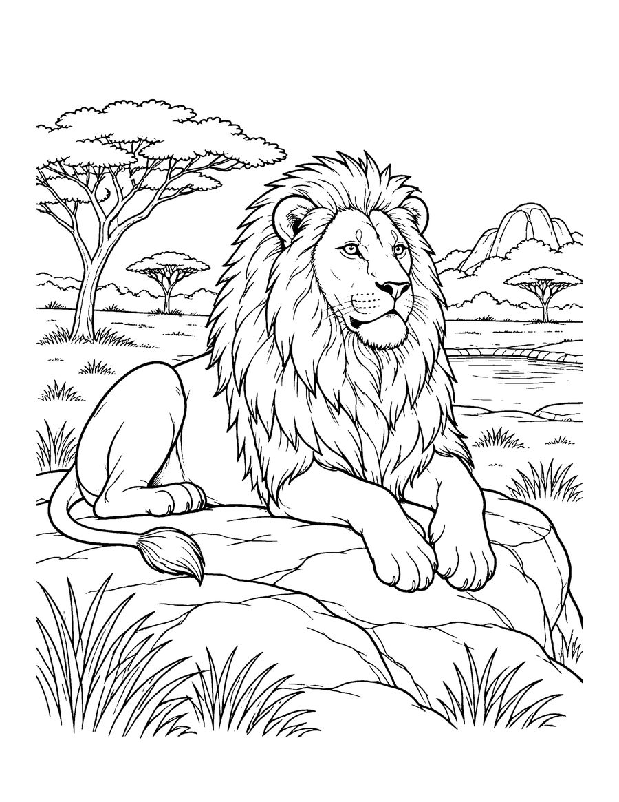
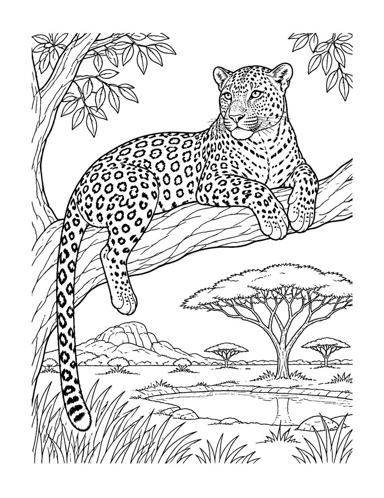
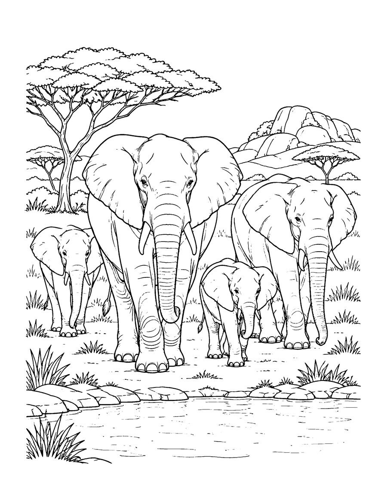

Take a safari from your kitchen table with these free safari animal coloring pages. They come from Africa's Big Five, a realistic coloring book for teens and adults. The free set has a male lion resting on a rock, a leopard lounging on a tree branch and an elephant herd walking to a waterhole.
The Big Five is a famous safari list made up of the lion, leopard, elephant, rhino and Cape buffalo. The name started as a hunting term but today it describes the animals visitors most hope to see in African national parks. The drawings are realistic, with manes, spots, wrinkles and grass textures that invite careful shading. Warm golds, browns and sunset oranges bring the savanna to life, and colored pencils give soft fur. Print on US Letter paper at 100% scale. These pages also make a nice gift for an animal lover or a safari fan. The full book has 40 pages with all five animals, including cubs, calves and sunset scenes.
Your 3 free coloring pages

Leopard on a Branch
Download free page (PDF)
Elephant Herd
Download free page (PDF)Printing tips
- Print at 100% scale on US Letter (8.5 x 11 in) paper. For A4, choose “Fit to page”.
- Use heavier paper (65 lb / 120 gsm or more) if you color with markers, so ink does not bleed through.
- Download the PDF first, then print from your PDF viewer for the sharpest lines.
Get all 40 pages
These 3 pages are a taste of Africa's Big Five (Teens & adults). The full coloring book has 40 pages, ready to print or color in a book.
More free coloring pages

Free Arctic Animals Coloring Pages
Teens & adults

Free Mandala Animal Coloring Pages
Teens & adults

Free Cat Coloring Pages for Kids
Kids 6-12

Free Coral Reef Coloring Pages for Adults
Teens & adults